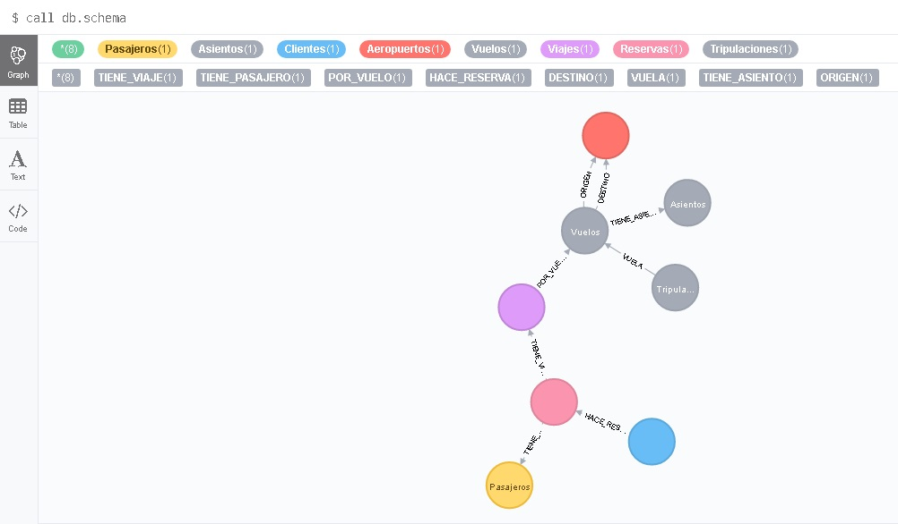

NoSQL
This project includes a design of a flight reservation system for a fake airline. This system allows the client to make inquiries and reserve flights remotely; In addition, it offers the airline the possibility of consulting the crew of a flight to easily manage the company's human resources, saving costs by not employing a human agent for the sale. To manage it, the NoSQL systems such as MongoDB and Neo4j are used.

Moreover, the evaluation of the performance of reading and writing operations as well as the management of reservations of these two systems is conducted, which is a challenge and the motivation for carrying out this work. In general. the task optimise the databases using indexes, while implementing the basic commands and queries, in order to get more in depth usage of those NoSQL document databases structures.
This project forms a part of a curse given in Polytechnic University of Valencia.